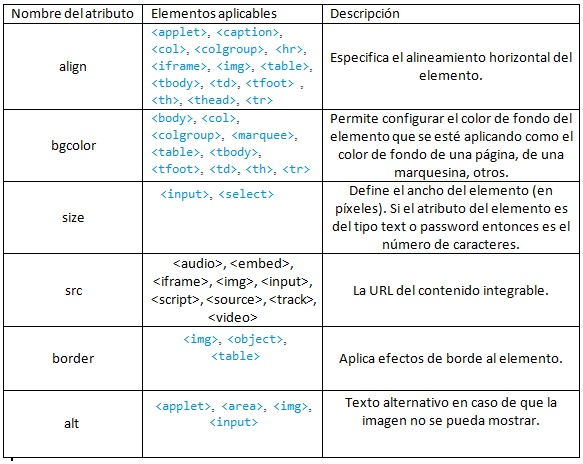

Atributos y valores
Segun FC Ojeda - 2005 - fcharte.com
Los atributos de HTML son palabras especiales utilizadas dentro de la etiqueta de apertura, para controlar el comportamiento del elemento. Los atributos de HTML son un modificador de un tipo de elemento de HTML. Un atributo tampoco modifica la funcionalidad por defecto de un tipo de elemento o proporciona funcionalidad a ciertos tipos de elementos incapaces de funcionar correctamente sin ellos. En sintaxis HTML, un atributo se añade a una etiqueta de inicio de HTML.
Se han reconocido varios tipos de atributos básicos, incluyendo:
(1) atributos requeridos,
necesitados por un tipo de elemento particular, para que aquel tipo de elemento funcione
correctamente;
(2) atributos opcionales, utilizados para modificar la funcionalidad por defecto
de un tipo de elemento;
(3) atributos estándares, soportados por muchos tipos de elementos; y
(4) atributos de evento, utilizados para causar que los tipos de elemento especifiquen guiones
o script para ser ejecutados bajo circunstancias concretas.
Algunos tipos de atributo funcionan de manera diferente, cuándo son utilizados para modificar diferentes tipos de elemento. Por ejemplo, el atributo name (nombre) se utiliza por varios tipos de elementos, pero tiene funciones ligeramente diferentes en cada uno.
Los atributos de HTML generalmente se muestran como una pareja nombre-valor, separados por =, y están escritos dentro de la etiqueta de inicio de un elemento, después del nombre del elemento


Ojeda, F. C. (2005). La biblia de HTML. Anaya Multimedia.